Drag and Drop Website Builder
Black Unicorn Audio is the creative technology division of Black Unicorn Recordings, dedicated to developing innovative audio software, virtual instruments and experimental sound design tools.
Born from over 30 years of electronic music production, our philosophy is simple: technology should inspire creativity, encourage experimentation and open doors to new artistic possibilities.
From unconventional effects processors and generative music tools to audiovisual synthesis and experimental instruments, we create software that challenges traditional approaches to music production.
Explore our growing collection of free and commercial plug-ins, discover our latest developments and become part of our creative community.
Beyond convention. Beyond expectation.
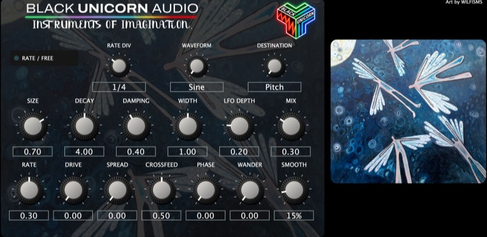
Unicorn Space is a creative spatial processor designed to transport sound into vast, evolving acoustic landscapes.
More than a conventional reverb, its internal modulation engine allows the space itself to become a living, moving part of your composition. Explore shifting pitch, evolving decay, stereo movement and unpredictable spatial textures through seven LFO waveforms, independent Wander and adjustable modulation smoothing.
From intimate atmospheres to enormous, otherworldly environments, Unicorn Space invites you to lose yourself in sound.
Featuring original artwork by WILFISMS.
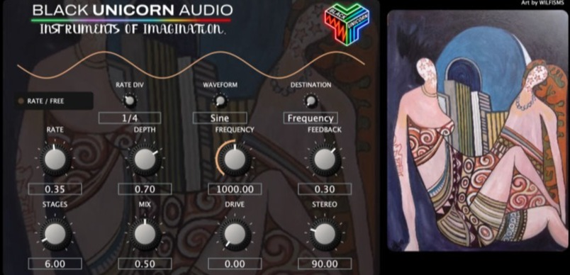
From subtle psychedelic movement to deep, swirling sonic transformations, Unicorn Phaser brings the timeless character of classic phasing into a new creative environment.
Explore evolving textures, resonant sweeps and rhythmic modulation with a flexible LFO featuring seven waveforms, adjustable depth and tempo synchronisation. Push it gently for warmth and movement, or take it to extremes for experimental sound design.
Wrapped in original artwork by WILFISMS, Unicorn Phaser is as much about exploration as it is about processing.
A little psychedelic magic for your studio.
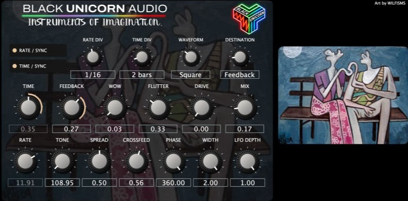
Inspired by the unpredictable character of analogue tape machines, Unicorn Tape explores the space between vintage tape effects and experimental sound manipulation.
Independent wow and flutter controls introduce organic imperfections, while a versatile modulation engine opens up a world of shifting delays, evolving pitch textures and expansive stereo movement.
From nostalgic warmth and gentle instability to disintegrating echoes and beautifully twisted soundscapes, Unicorn Tape celebrates the musical possibilities of imperfection.
Featuring original artwork by WILFISMS.
Creative experimentation shouldn't come at the expense of your hearing or your equipment.
Ear & Gear Protection is a lightweight audio utility from Black Unicorn Audio, designed to provide an additional layer of protection against unexpected signal levels, excessive frequency energy and unstable audio processing.
Simply place it at the end of your plug-in chain or on your master bus. Its intelligent signal monitoring and automatic interventions work in the background, with individual indicator lights showing when protection has been triggered.
DC offset removal
Subsonic frequency filtering
Ultrasonic frequency filtering
Sustained frequency energy monitoring
Automatic peak limiting
Invalid digital signal detection
Individual intervention indicators
Gain reduction display
Protection enabled by default
Simple, uncluttered interface
An experimental audiovisual instrument that transforms images, colour, light and motion into sound.
Part video synthesizer. Part spectral processor. Part granular sound laboratory.
PixelMorph opens up an entirely different approach to electronic sound creation, where visual composition becomes sonic composition and movement becomes modulation.
PixelMorph explores the territory between visual art and electronic music, bringing the principles of video synthesis into the world of audio production.
At its heart is a dynamic visual engine whose evolving patterns, colours and textures become the source of complex audio transformations.
Images are no longer simply something to look at. They become playable, manipulable sources of sonic information.
Combining spectral processing, granular synthesis, RGB analysis and an extensive modular modulation system, PixelMorph creates an environment in which sound can be sculpted through visual experimentation.
From delicate atmospheric textures and slowly evolving soundscapes to fractured rhythms, alien harmonics and extreme psychedelic transformations, PixelMorph encourages discovery rather than prescribing a particular musical outcome.
Designed for musicians, sound designers, experimental artists and those who enjoy venturing beyond the familiar.
No artificial intelligence. No generative AI models. Just mathematics, modulation, synthesis and imagination.
Photos as frames bridge generations. Family albums pass down traditions and legacies. Amid life's chaos, photos offer a pause, a chance to reflect and appreciate. They're the threads weaving our life's tapestry, reminding us of the beauty in the everyday.
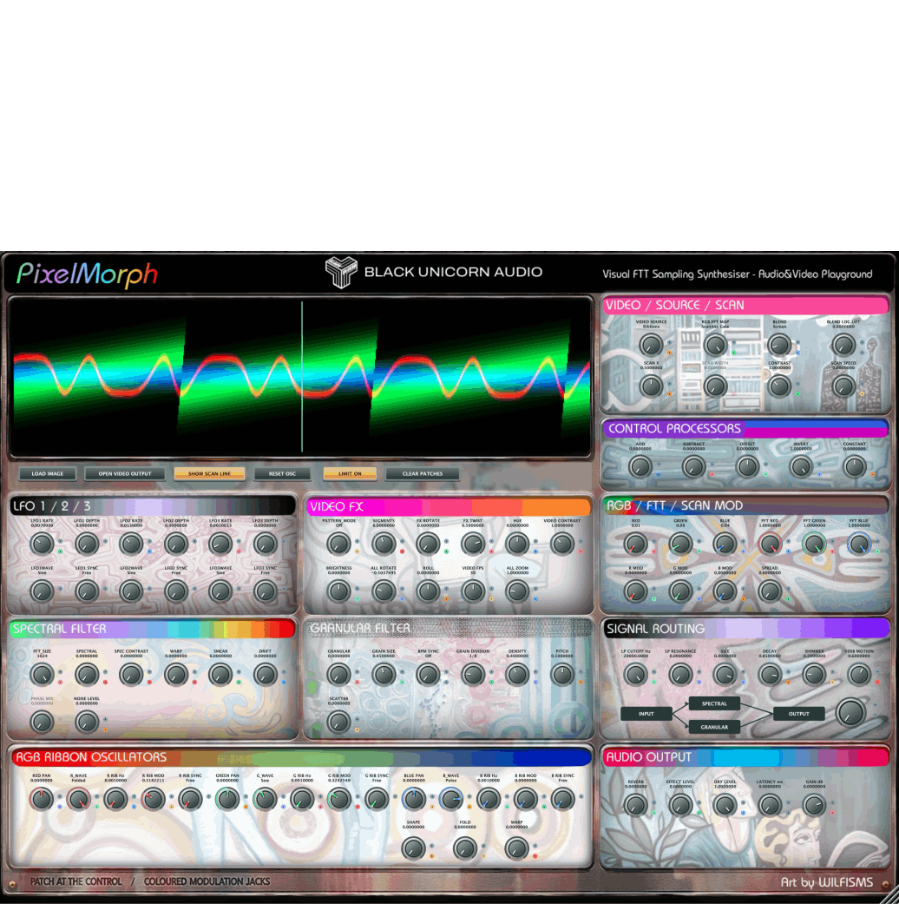
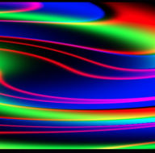
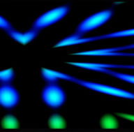
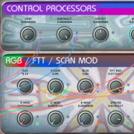
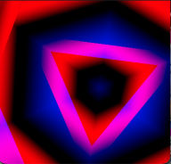
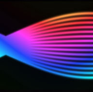
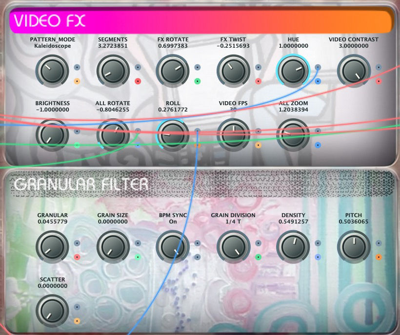
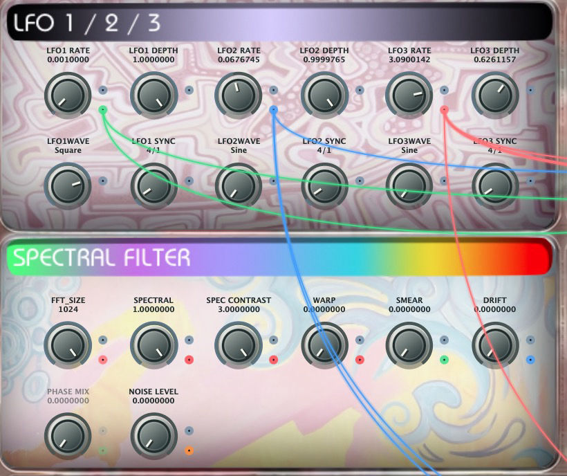
Some machines are designed to recreate familiar sounds. PixelMorph was designed to discover unfamiliar ones.
Drawing inspiration from early electronic music laboratories, analogue video synthesis, modular electronics and experimental visual art, PixelMorph embraces the unpredictable relationship between technology and creativity.
It is an instrument to explore rather than simply operate. A place where accidents become discoveries and the unexpected becomes part of the composition.
Developed independently by Black Unicorn Audio, with original artwork by Wilfisms.
NOW BETA TESTING JOIN OUR PROGRAM FIND OUT MORE
Visual synthesis and image processing
Real-time generative video synthesis engine
Import your own photographs, paintings, illustrations and digital artwork as sources for sound creation
Built-in library of factory images
Three independent RGB ribbon generators
Independent ribbon shape, fold and warp controls
Multiple visual scanning modes
Adjustable scan width and spectral warp
Real-time visual manipulation and animation
Dedicated external visual display window
Image-driven FFT spectral audio processing
Visual-driven granular audio engine
RGB harmonic analysis and frequency spreading
Independent spectral and granular sound processing
Visually triggered white noise generation
Real-time transformation of incoming audio
Resonant low-pass filtering
Spatial reverb with shimmer and motion controls
Independent processing levels for blending sonic textures
Capable of both subtle musical treatments and extreme experimental sound design
Internal and host-synchronised modulation
Free-running and tempo-synchronised LFOs
Multiple modulation waveforms
Virtual modular patch cables
Direct parameter modulation through patch sockets
Mathematical control processors
Addition, subtraction, inversion and offset processing
Constant value generators
Independent tempo divisions for RGB ribbon movement
Complex interconnected modulation possibilities
Designed for studio production, sound design and audiovisual performance
Explore the sonic characteristics of your own visual artwork
Create evolving soundscapes, rhythmic textures and experimental atmospheres
Fully scalable graphical interface
Hardware-inspired modular instrument design
Original artwork by Wilf Frost
Independently developed by Black Unicorn Audio
Pure algorithmic synthesis — no artificial intelligence or AI dependency
Drag and Drop Website Builder